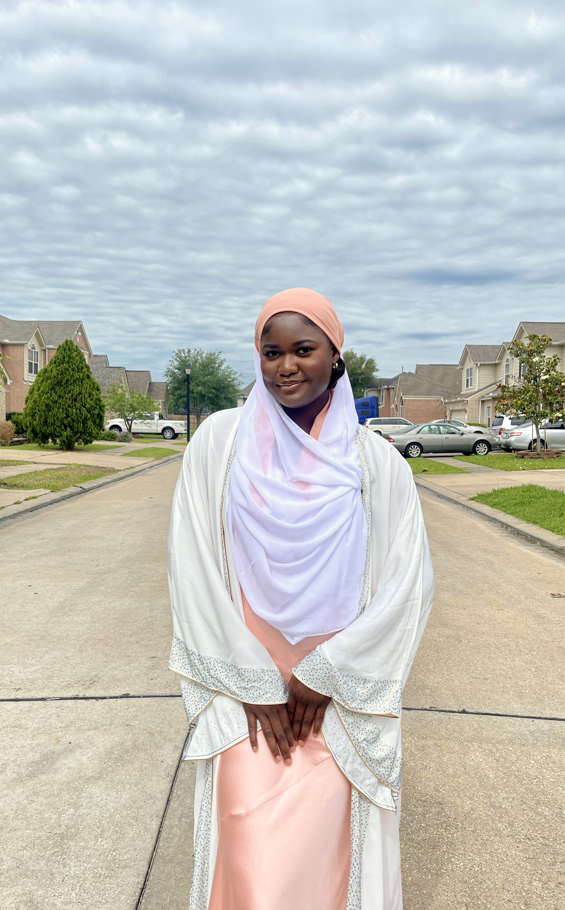
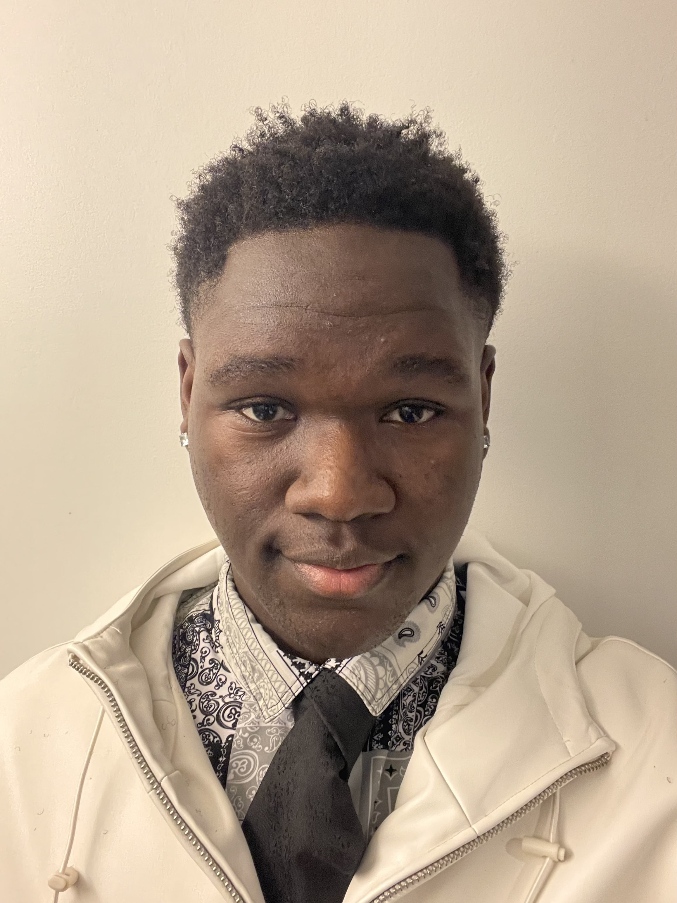

Meet My Sisters
Sister 1

Hadeezah is the eldest sibling and is known for her nurturing and caring nature, traits that she seamlessly translates into her profession as a dedicated nurse in Houston. With a heart full of compassion and a relentless drive to make a difference in people's lives, she excels in her career, providing comfort and healing to those in need. Outside of work, Hadeezah is passionate about holistic wellness and often spends her free time volunteering at local health clinics, advocating for preventive care, and organizing community health awareness campaigns.
Sister 2

Rabiat is the second sibling, a determined and intellectually curious individual who is currently pursuing her passion for technology by studying computer engineering at the University of Texas San Antonio. With a sharp mind and a knack for problem-solving, she immerses herself in the world of algorithms and coding languages, constantly pushing the boundaries of innovation. In addition to her academic pursuits, Rabiat is an avid advocate for diversity and inclusion in STEM fields, actively participating in student organizations and mentoring programs to empower underrepresented minorities in technology.
Sister 3

Azeemah, the youngest sibling, is a bright and determined student who is excelling academically at both Alief Early College High School and Houston Community College. With a voracious appetite for knowledge and a thirst for academic excellence, she is currently working towards earning her associate's degree in science. Azeemah is known for her insatiable curiosity and passion for exploration, often immersing herself in various extracurricular activities ranging from robotics clubs to environmental conservation projects. With boundless energy and a relentless drive for success, she dreams of pursuing a career in the field of biomedical research, where she hopes to make groundbreaking discoveries that will positively impact humanity.